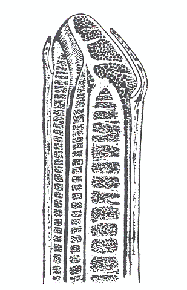
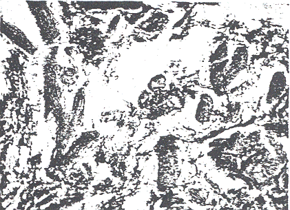
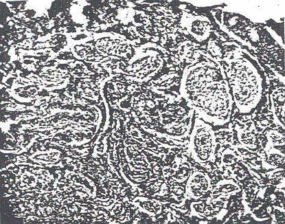

THE CIRCUMCISION REFERENCE LIBRARY
BY GEOFFREY JEFFERSON, M. S. LOND., F. R. C. S., (ENG.), VICTORIA, B. C.
My attention having been called to the peripenic muscle by an experience during an operation, an investigation was undertaken the results of which are appended below.
It is not very generally realized that the dartos muscle of the scrotum is continued forward beneath the skin of the penis to from the peripenic muscles (Fig. 1). This muscle sheet has a certain practical importance, for by the agency of its fibers the distal opening of the prepuce is liable to marked alterations, seemingly larger at some times than at others, according to the state of contraction of his subcutaneous muscle.
The peripenic muscles appears accurately to have been described for the first time by Sappey (1) in 1860, but it is passed over with the briefest mention by the majority of anatomical textbooks. It will be remembered that the superficial fascia of the bodies of many of the lower animals contains a thin muscle sheet, the panniculus carnosus. in man the dartos, the fasciae of Colles and Scarpa, and the platysma myoides, are the only remnants of this once widely distributed muscle layer. It has been thought that the dartos extends into the penis only for a short distance on its underside, in the so-called area scroti of Klatsch. These are two areas, one on either side of the root of the penis on its under surface, differing from the rest of the penic skin in presenting a darker, rougher appearance, in being very rich in sebaceous glands, and plentifully provided with hairs (6). This is too conservative an estimate of the extent of the muscle tissue, for my own observations agree with the excellent account given by Delbert (2) that the muscle extends over the whole length of the penis.

Fig. 1 Diagram of the penis to show the
general
disposition of the peripenic muscle.
I have examined a series of ten prepuces removed at operation (circumcision), the ages of the patients ranging from a few weeks to thirty years. The whole length of the penis was examined in one specimen only, a twin foetus of 30 weeks, in which the whole penis and scrotum were of convenient size for cutting en bloc. I can therefore speak with more authority on the preputial part of the peripenic muscle than upon the remainder, the former portion being surgically the more important. The specimens were embedded in paraffin and the sections stained with Ehrlick's acid haematooxylin, Van Gieson's picrosaurefuchsin being employed as a differential stain for smooth muscle. The amount of muscle tissue present beneath the skin is really rather astonishing.

Fig. 2 X 120. Longitudinal section of
prepuce, male, aged 25.
Subcutaneous portion only. Several smooth muscle fibers can
be seen.
Some are cut longitudinally, some obliquely, and others
transversely,
this demonstrating the diverse directions in which the bands
of muscle run.
Like the scrotal dartos, of which it is a direct prolongation, the peripenic muscle is composed of unstriped fibers which form an incomplete investment of the penis from its base to the extremity of the prepuce. The muscle is situated 1 or 2 mm. beneath the skin, from which it is quite separate except inferiorly in the region of the median raphe. In the many sections examined by me the muscle fibers are plentiful. Owning to their great diversity of direction only a few fibers can be seen running the same way in any one microscopic field. (Fig. 4) The muscle bundles are very slender and are made up of a few muscle-cells only, but they run in every direction transversely, longitudinally, and obliquely. In the prepuce a great many of the fibers course in the long axis of the organ. The fibers are loosely packed (Fig. 2), the intervals between the muscle-bundles being filled up with lax fibrous tissue. There is of course no subcutaneous fat in the penis. The muscle forms a sheet of practically equal thickness for its whole extent, but owing to the doubling of the skin to from the prepuce the muscle-fibers are rather more abundant in that region, as the muscle lines, to a certain extent, the inner "mucosal" layer to the prepuce as well as the outer. Woolsey (5) remarks that the dartos fibers at the end of the prepuce are circularly arranged, forming a kind of sphincter. There was no special collection of fibers such as might be thought to indicate a sphincter in any of the specimens I examined, but the sphincteric possibilities of any part of the preputial portion of the muscle cannot be denied.
The development and strength of the whole dartos sheet varies greatly in different individuals, and the peripenic muscle is not always well formed. It is particularly likely to be weak in persons with dependent, lax, smooth scrotums. The muscle was present in all the ten prepuces examined; it was poorly developed in one case only. Charpy reports that he has has seen it absent in its preputial portion. The peripenic muscle is doubtless the cause of the remarkable rugosity usually exhibited by the removed prepuce or the prepuce under the stimulus of cold. These rugae are in the main arranged transversely, but innumerable minute ridges are superposed upon these. There can be no doubt but that the purpose of the muscle is to adapt the skin to the varying volume of the organ, as the changes are greater than could be accommodated by the elasticity of the skin alone. It has been suggested that the muscle may aid in erection by compression of the dorsal vein, but this influence could hardly be exerted to any great extent upon the vena dorsalis penis profunda (which drains the erectile tissue), as this vein is protected by the fascia propria penis, though the superficial vessel might be constricted.
The prepuces of the lower animals are usually more complicated than man's (see for example the horse and ox, 4, which have a double prepuce, the outer, at least, very muscular), so homologies are difficult to establish./*

Fig. 3 X 100. Transverse section, prepuce
of male aged 17.
The bundles of the peripenic muscle are readily seen.
Fig. 4 X 120. Longitudinal section, prepuce
of male aged 17. The
peripenic muscle fibers run across the middle of the
field;
others are cut transversely.
As has already been said, under the stimulus of cold the peripenic muscle contracts just as does the scrotal dartos, and whereas the contraction of the latter draws the testes close to the body, contraction of the former causes the skin to conform to the reduced size of the organ, and the prepuce, if of any length, to shrivel into a small knot beyond the glans. If the prepuce is short it tends to retract behind the glans and the muscular contraction makes it difficult to draw the fold of skin forward. It will be realized that this muscle has considerable potentialities in the question of phimosis and possibly also in paraphimosis. It is common to observe how different an appearance many phimosis cases present if seen on different occasions under different conditions. It may at one time be impossible to retract the skin enough to get a glimpse of the glans, while at other times the preputial orifice may be several millimeters in diameter. This change is brought about by muscular activity and the possibility of such contraction should be borne in mind when an opinion is given as to the desirability of circumcision. As is characteristic of smooth muscle everywhere, the peripenic muscle contracts very slowly and sluggishly, so that the alterations which it induces are slow to occur and, being slight, are usually overlooked.
Surgical textbooks sometimes describe two varieties of phimosis, namely the hypertrophic and the atrophic, these besides the ordinary classes of congenital and acquired. The distinction between the two forms lies in the amount of prepuce present, difficulty or impossibility of retraction of the foreskin being common to both varieties (3). Thus, in the hypertrophic form the prepuce is abundant but has too small a distal opening, while in the atrophic form the prepuce is short as well as too narrow (see Fig. 6). This distinction is, in the adult, artificial to a certain extent, as the two varieties can be seen on the same patient under different circumstances. For the peripenic muscle not only can alter the size of the preputial opening but, aided perhaps by a certain shrinkage of the penis, can cause the prepuce to appear redundant, while at other times it is barely sufficient to cover the glans (Fig. 6). This statement cannot be so rigidly applied to infants, in whom redundancy of the foreskin is common. The probabilities are that such redundancy is not only common but normal; the skin awaits the development of the corpora cavernosa and spongiosum which will occur at puberty.
The writer might have doubted the latent powers of this muscle had he not met with a remarkable example.
A male, aged 35, suffered from a phimosis; the prepuce was just long enough to cover the glans, but the opening was too small for retraction. Circumcision was advised. Under the influence of the alcoholic solution of iodine with which the penis was painted beforehand the peripenic muscle underwent a powerful tonic contraction. The tip of the prepuce became somewhat inverted and the muscular contraction was of so determined a character that it was impossible to roll the prepuce backward to display its distal opening. This rendered an accurate estimation of the amount of skin to be removed extremely difficult, and too much was very nearly removed. When the section was made the muscle slowly relaxed.
A colleague had an experience which helps to emphasize the powers of the muscle: On one occasion he found it impossible to introduce in the cold a catheter through the preputial orifice of an adult male who had a phimosis, while the meatus and tip of the glans could be easily displayed in the warmth of the operating room (Fig. 6).
Experiences such as these illustrate the vigor of the peripenic muscle under favorable circumstances, and induce one to take more heed of its possibilities.
It is probable that far more circumcisions are performed upon infants than are really necessary. It is not widely enough realized, particularly by the lay public, that a condition of phimosis is normal at birth. It is inconceivable that children are born with actual deformities in this region as often as the statistics of circumcision would lead an observer to suppose. It is not until the penis undergoes its final development at puberty that the proper balance between the prepuce and the glans is struck. Further, adhesion between the prepuce and the glans is not an absolute abnormality, nor one which time cannot correct. This point merits, perhaps, some discussion.
Fig. 5. Prepuce of an infant. Several bands
of muscle tissue can
be seen in this field, running in different directions.
Fig. 6. The so-called hypertrophic (left)
and atrophic (right)
varieties of phimosis. The peripenic muscle is often
capable
of converting the one into the other. The circular
terminal
preputial fibers alone are indicated in red in this
figure;
the muscle fibers run in all directions (see text).
All operators must have been struck by the great tenacity of the adhesion between the glans and the prepuce. However careful a dissection is made raw surfaces are commonly left on the glans, and sometimes these are of considerable extent, detracting from an otherwise aesthetically pleasing result. As a rule, the younger the child the worse the glans looks. These abrasions usually heal easily without leaving permanent scarring, but it would be well if they could be avoided. That these abrasions are inevitable is readily seen on reference to the photomicrograph of the corona glandis of a 30 week foetus. It will be seen (Fig. 7) that the corona and balanopreputial space are filled up with epithelial cells which bind the inner surface of the prepuce to the glans. These cells form the "adhesion" which is so difficult to break down without injury to the superficial cells of the glans and prepuce. The origin of these cells is best explained by the more recent accounts of the development of the prepuce. It was formerly believed that the tip of the genital tubercle represented the glans penis or clitoridis, and that the prepuce grew forward over this from the outer skin folds (7). Berry Hart (8) and Wood Jones (9) have independently shown that the genital tubercle is a skin covered papilla and that the glans is sculptured out (to use Wood Jones' phrase) within the solid tubercle by the invasion of a mass of epithelial cells which start from the site of the future preputial orifice The invading cells burrow not only circumferentially but centrally, the latter advancing as a solid plug into the the tip of the glans. The breaking down of the former leads to the liberation of the prepuce, the degeneration of the latter forms the terminal part of the urethra. The breaking down of the preputial cells begins late in foetal life and is commonly incomplete at birth, making retraction of the prepuce impossible even though the the preputial orifice itself is large. Failure of these cells to desquamate is sometimes though rarely met with in the female. In such cases the prepuce entirely covers the glans clitoridis.
It will be noted that there is no evidence of any glands in the corona such as Tyson described in the orang-outang. Opinion that these glands do not exist is growing; Sprunk examined 300 human penes without finding a single gland of Tyson (1). There are a few rudimentary sebaceous glands and no hairs (Fig. 7). In youth the so-called mucous membrane of the prepuce and glans is certainly far different from that of the mouth or vagina, but probably becomes more deeply stratified if the glans becomes largely uncovered (as it often does) at puberty.
Fig. 7. Longitudinal section, penis of
fetus of 30 weeks. Note the
cells filling up the balano-preputial space and binding
the
glans to the prepuce. Note absence of Tyson's glands
at
corona. Urethra not shown.
An examination of ten prepuces removed at circumcision and one entire penis and scrotum (foetal) confirms the existence of abundant unstriped muscle-fiber beneath the skin of the penis. These are prolongations of the dartos sheet and form the "peripenic muscle." The fibers of this muscle possess the power of altering the preputial orifice to a certain extent, and hence a consideration of the latent powers of the muscle in causing varying degrees of phimosis is important.
The writer wishes to thank his colleagues at St. Joseph's Hospital, and also Dr. W. E. Home, pathologist to the Provincial Royal Jubilee Hospital, for several of the specimens examined.
[CIRP note: For more information on the penile muscle fibers, see Human prepuce: some aspects of structure and function.]
http://www.cirp.org/library/anatomy/jefferson/